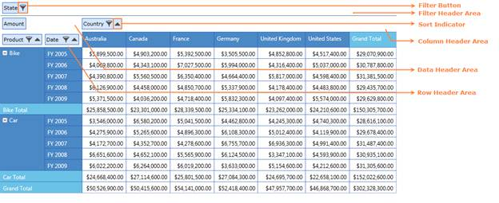
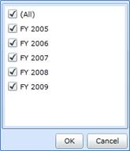
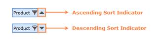

The PivotGrid Grouping Bar enables drag and drop feature of fields between different areas like Column, row, value and filter. By using the Grouping Bar, users can add, rearrange, or remove fields to show data in a PivotGrid exactly the way they want. It consists of the following:
· FilterHeader Area
· DataHeader Area
· ColumnHeader Area
· RowHeader Area
The Field headers identify fields in the pivot grid. A field header contains:
· A caption string which identifies the field's content;
· A sort indicator which identifies the sort order applied to the field's values;
· A filter button which end-users can use to filter field values.
The headers of all visible fields are contained within header areas. The headers of row and column fields are displayed within the row header and column header areas, respectively. The headers of data fields are displayed within the data header area.
Use Case Scenarios
At times User may expect the Grid to perform sorting and filtering at run-time.
Adding Grouping Bar
By default, Grouping Bar is enabled. It can be disabled by the following property of PivotGridControl,
|
[XAML] <syncfusion:PivotGrid ShowGroupingBar="False"> </syncfusion:PivotGrid>
|
|
[C#] // Disable GridGroupingBar this.PivotGrid1.ShowGroupingBar = false;
|
|
[VB] ' Disable GridGroupingBar Me.PivotGrid1.ShowGroupingBar = False |

Figure 20: PivotGrid Grouping Bar
Filtering
Filtering of data displays only a subset of data that meets criteria that users specify and hides data that they don’t want to be displayed. The Items present in the FilterHeaderArea, ColumnHeaderArea and RowHeaderArea provides the option of filtering which is represented as a Funnel symbol on it. On clicking, it opens a filter popup which displays a list of elements through which filtering can be applied.

Figure 21: Filter Popup
Sorting
Sorting data enables you to quickly visualize and understand your data better, organize and find the data that you want, and ultimately make more effective decisions. By default, PivotGrid will populate the data in ascending order. Sorting order can be changed clicking on the item present in the RowHeaderArea and ColumnHeaderArea. The Sort indicator present in the item represents the Sort type whether it is ascending sort or descending sort.

Figure 22: Sort Indicator
Properties
Table 1: PivotGridControl Table
|
Property |
Description |
Type |
Data Type |
Reference links |
|
ShowGroupingBar |
Gets or sets a value indicating whether to Show/Hide GroupingBar |
Dependency |
bool |
NA |
Table 2: GroupingBar Table
|
Property |
Description |
Type |
Data Type |
Reference links |
|
AllowFiltering |
Gets or sets a value indicating whether to allow filtering of elements |
Dependency |
bool |
NA |
|
AllowSorting |
Gets or sets a value indicating whether to allow sorting of elements |
Dependency |
bool |
NA |
|
ColumnHeaderArea |
Gets or sets the Column header area of Grouping bar which represents the PivotColumns |
Normal |
PivotGroupingItemsControl |
NA |
|
DataHeaderArea |
Gets or sets the Data header area of the Grouping bar which represents the PivotComputationInfo |
Normal |
PivotGroupingItemsControl |
NA |
|
FilterHeaderArea |
Gets or sets the Filter header area of Grouping bar which represents the Filters |
Normal |
PivotGroupingItemsControl |
NA |
|
FilterPopup |
Gets or sets the Filter Popup which will be displayed if Filter button is clicked on any of the Column/Row/Filter header area item |
Normal |
FilterPopup |
NA |
|
Filters |
Gets or sets the collection of Filter Items |
Normal |
ObservableCollection<FilterItem> |
NA |
|
GridControl |
Gets or sets the PivotGridControl |
Normal |
PivotGridControl |
NA |
|
IndicatorBackground |
Gets or sets the Background for Indicator popup which is displayed when any of the Item present in PivotGroupingItems control is dragged over |
Normal |
Brush |
NA |
|
ItemsBackground |
Gets or sets the background of PivotGroupingItemsControl Item |
Normal |
Brush |
NA |
|
ItemsBorderBrush |
Gets or sets the Border brush of PivotGroupingItemsControl Item |
Normal |
Brush |
NA |
Events
|
Event |
Description |
Arguments |
Type |
Reference links |
|
GroupingBarLoaded |
Handles the loaded event of Grid Grouping Bar |
NA |
EventArgs |
NA |
Sample Link
To access a Conditional Formatting sample:
1. Open the Syncfusion Dashboard.
2. Click Business Intelligence.
3. Click the Silverlight drop-down list, and select Explore Samples.
4. Navigate to Syncfusion.PivotAnalysis.Silverlight.Samples -> Syncfusion.PivotAnalysis.Silverlight.Samples -> Samples -> GroupingBarDemo.
 Disable Grouping by Specific
Fields
Disable Grouping by Specific
Fields